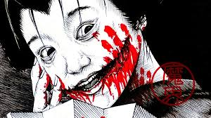
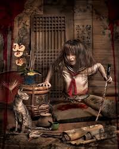
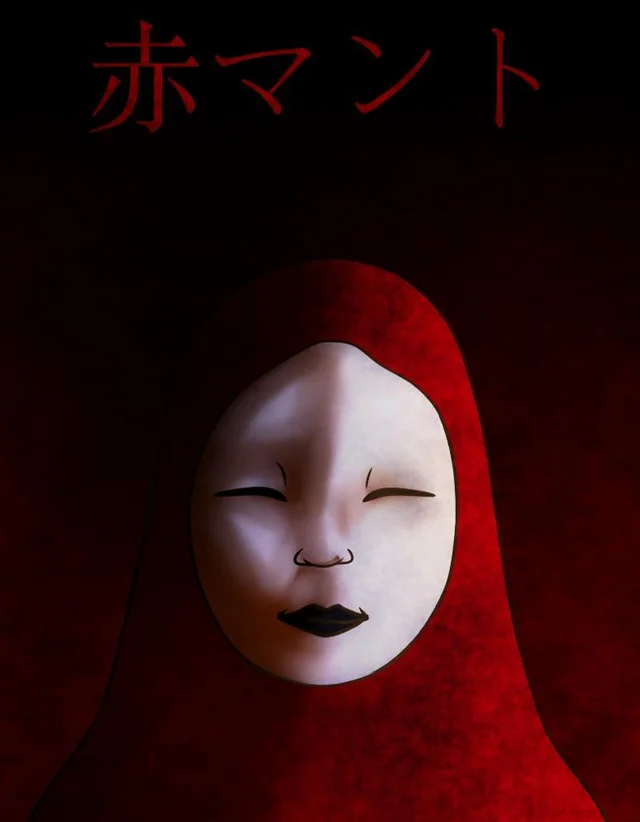
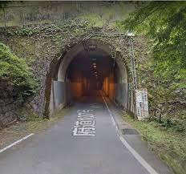
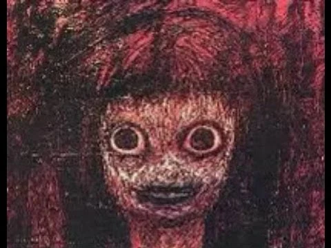
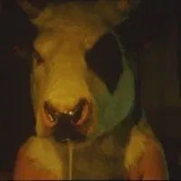

Kuchisake-onna – La mujer de la boca cortada
Era de noche. Caminabas solo por una calle silenciosa cuando, de pronto, una mujer con un abrigo largo y una mascarilla quirúrgica aparece desde la penumbra. —¿Soy bonita? —te pregunta, deteniéndose justo frente a ti. Sus ojos se ven normales, incluso bonitos. Asientes con una sonrisa nerviosa. Entonces, ella se lleva las manos al rostro… y lentamente se baja la mascarilla. Su boca se abre de oreja a oreja, grotescamente cortada, como si alguien la hubiera desgarrado con tijeras oxidadas. La sonrisa parece infinita. Sangra. Tiembla. —¿Y ahora? —te dice con una voz distorsionada. Corres. Corres sin mirar atrás. Pero siempre la escucharás detrás de ti… —¿Y ahora? ¿Y ahora? ¿Y ahora?
teke-teke
La mujer partida Una noche, en una estación de tren vacía, un joven escuchó algo arrastrarse. El sonido era seco, metálico… teke… teke… teke… Miró hacia la vía, pero no había nadie. Al girarse, la vio: una mujer sin piernas, con los codos ensangrentados y la parte inferior del cuerpo cercenada, arrastrándose velozmente por el andén. No tuvo tiempo de gritar. En segundos, estaba encima de él, mirándolo con unos ojos muertos, la mandíbula desencajada, y un cuchillo oxidado en la mano. —Ahora somos iguales —susurró, antes de cortarlo por la mitad. Desde entonces, se dice que si oyes el sonido teke teke por la noche… corre sin mirar atrás. Porque si la ves, ya es tarde.
AKAMANTO
El espíritu del baño Kana se quedó sola limpiando su escuela. Entró al baño del último piso, ese que todos evitaban. Estaba sucio, oscuro… helado. Cuando cerró la puerta, una voz masculina la susurró desde la última cabina: —¿Papel rojo o azul? Pensó que era una broma. —Rojo —respondió con fastidio. La puerta se abrió sola. Un hombre cubierto con una capa escarlata salió. De su espalda brotaron cuchillas como alas, y en segundos, la sangre tiñó las paredes. A la mañana siguiente, la encontraron en el baño… pero sin piel. Aka Manto aún ronda los baños escolares, esperando otra víctima que conteste mal.
El túnel de Kiyotaki
Un grupo de amigos decidió cruzar el Túnel de Kiyotaki como parte de un reto nocturno. Uno de ellos, Ryota, comenzó a grabar. A medio camino, el túnel se volvió más largo, como si no tuviera fin. Las luces del auto parpadearon. La radio solo emitía un lamento agudo. En el retrovisor, Ryota vio una figura blanca, sin rostro, sentada en el asiento trasero. Nadie más la vio. Al salir del túnel, Ryota estaba pálido, mudo… con la mirada perdida. Murió esa noche en su cama, con la boca abierta en un grito silencioso. En la grabación se escucha un susurro al final: —Uno más vendrá pronto
Tomino no Jigoku
El poema maldito Yuki lo leyó en voz alta durante una noche de lluvia, riéndose del mito. Un poema que hablaba de un niño que descendía al infierno, arrastrado por su culpa, rodeado de gusanos y sangre. Las luces de su casa comenzaron a parpadear. Su gato huyó maullando como nunca antes. Luego, las paredes comenzaron a sangrar. Esa madrugada, los vecinos oyeron sus gritos. Al entrar, lo encontraron escribiendo el mismo poema en las paredes… con sus propias uñas. El poema aún puede encontrarse en internet. Pero nadie debería pronunciarlo completo en voz alta.
GOZU
La cabeza de vaca En una escuela rural, un profesor le leyó a sus alumnos una historia prohibida. Era sobre un espíritu antiguo con cabeza de vaca y cuerpo humano, castigador de aquellos que hablaban de su leyenda. La historia era confusa, perturbadora… hipnótica. A mitad del relato, los estudiantes comenzaron a gritar y llorar, algunos se desmayaban, otros se arañaban la cara. El profesor seguía leyendo, como si estuviera poseído. Cuando llegó el director, encontró el aula en completo silencio. Todos, incluso el profesor, estaban en el suelo, con los ojos en blanco y una sonrisa horriblemente torcida. El manuscrito fue quemado, pero una copia digital circula en foros oscuros. Nadie que la haya leído ha vuelto a ser el mismo.